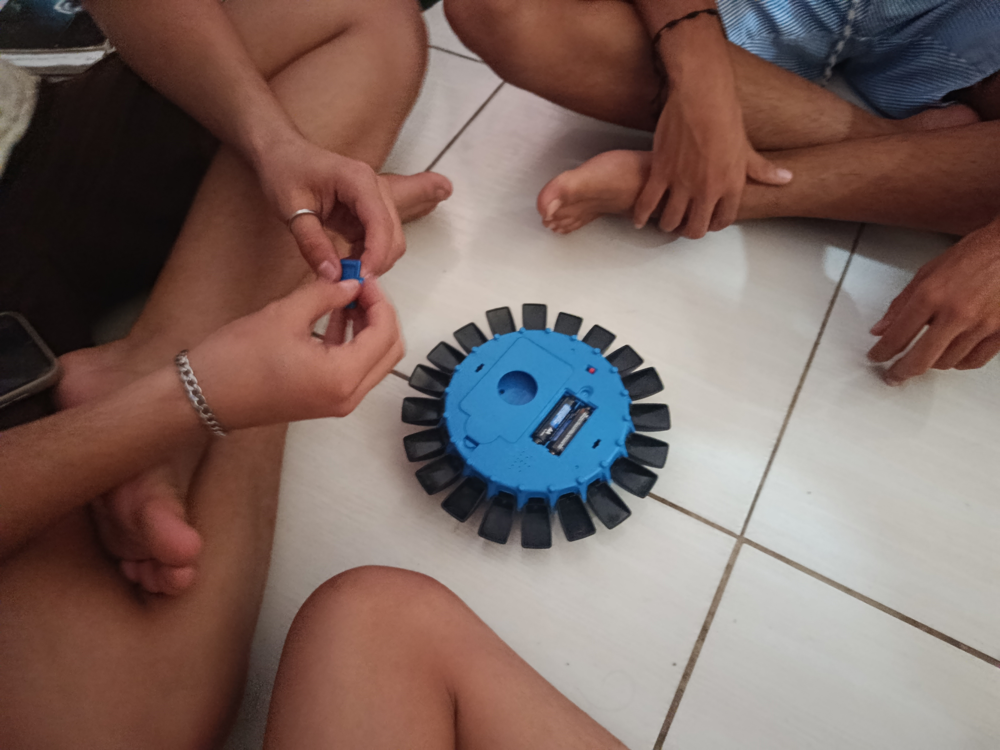
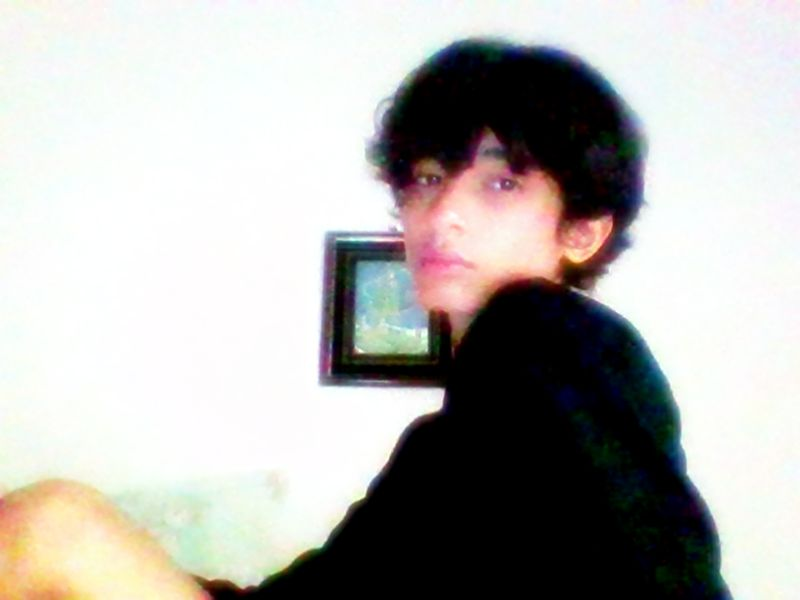
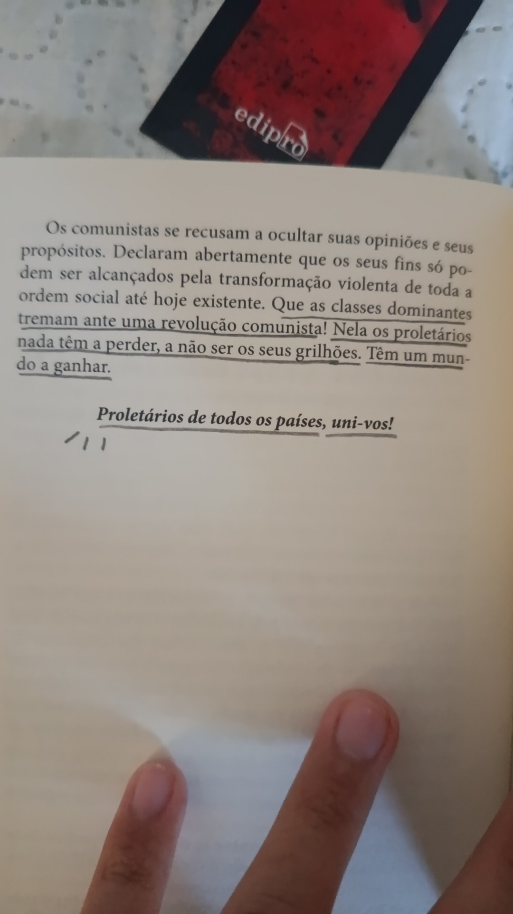
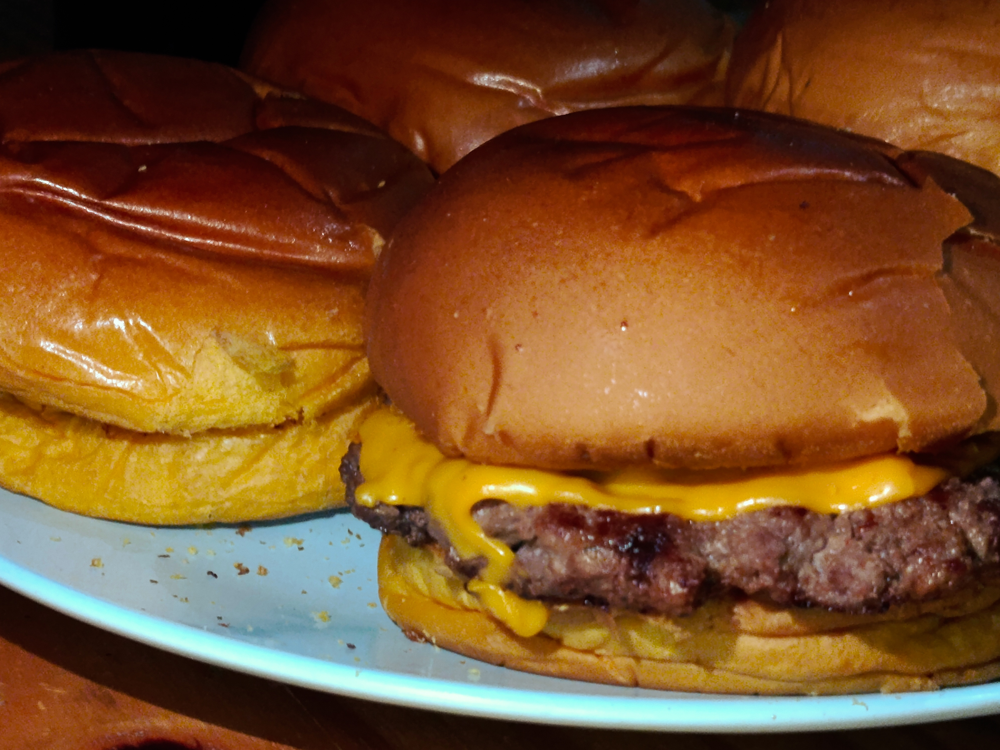
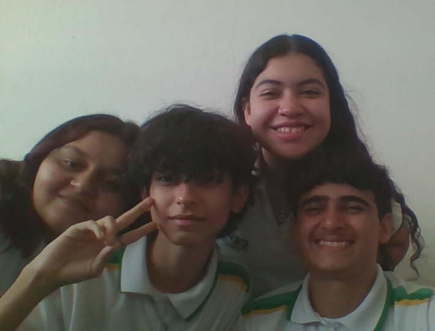
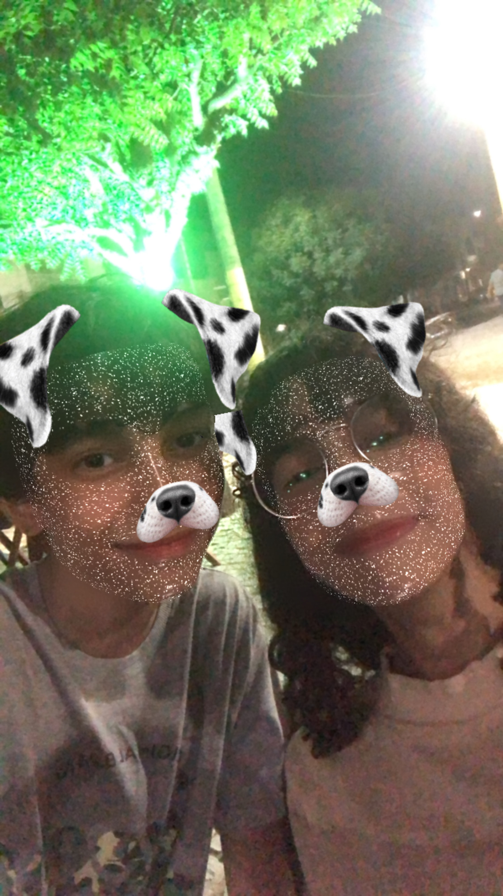
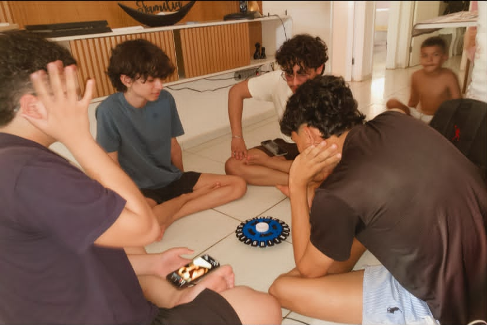
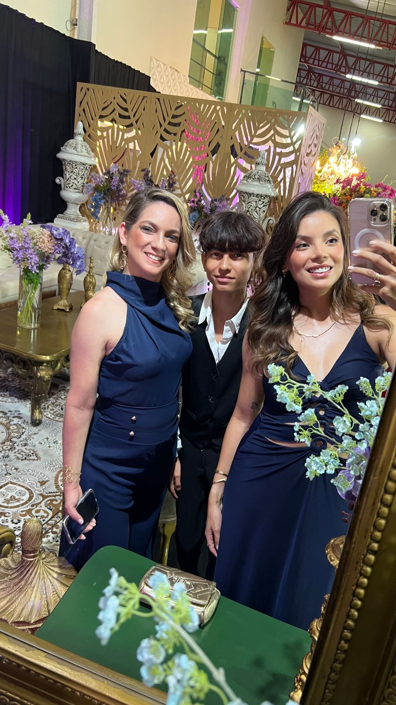

✦ . ⁺ . ✦ . ⁺ . ✦. ⁺ . ✦. ⁺ . ✦. ⁺ . ✦
Como assim você achou a página bônus?!?!
Tudo bem, ja que você achou aqui mesmo, vou te contar mais dos meus gostos e amigos

Esse aqui sou eu, eu tenho vários amigos e pessoas importantes pra mim, eu amo todas elas como se fossem parte da minha família, na verdade ate mais que isso.
Mesmo que eu tenha várias pessoas ao meu lado, eu me sinto sozinho, e quando me sinto sozinho volto pra minha cama, leio um livro que eu gosto ou tento tocar violão ( Não consigo ) ou jogo qualquer jogo de 2012
ou eu simplesmente como hamburguer do meu pai!
Mas eu acho que não sou tãaaaaao sozinho assim, na verdade eu tenho muitas pessoas especiais do meu lado, que pretendo levar pra minha vida. Esses aqui são a Paola, Nicolly e o Juan! (e eu clarinho)
Eu tenho a Alice (minha irmãzona)
eu tambem tenho meus outros amigos (os fofoqueirus)
AAAAAAH QUASE ME ESQUECI DA MINHA FAMILIA VERDADEIRAAA
e por fim, eu tenho como companhia indireta as minhas cantoras e bandas favoritas! menção honrosa as minhas outras amizades e pessoas que eu amo muito na minha sala. Mas ué? Faltou uma outra pessoa também. . . Israely, vamos tirar uma foto e completar esse site? :D
menção honrosa as minhas outras amizades e pessoas que eu amo muito na minha sala. Mas ué? Faltou uma outra pessoa também. . . Israely, vamos tirar uma foto e completar esse site? :D